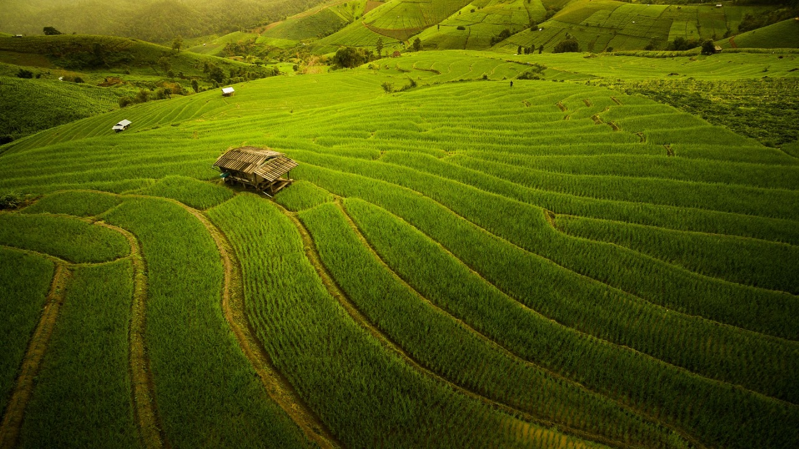

Hello, We help you grow your Farms
and provide information about

There are different types of farmers. And they all have equal significance. First are the farmers who grow a crop like wheat, barley, rice, etc. Since the maximum intake in the Indian houses is of wheat and rice. So, the cultivation of wheat and rice is much in farming. Moreover, farmers who grow these crops are of prime importance. Second, are the ones who cultivate fruits. These farmers have to prepare the soil for different types of fruits. Because these fruits grow according to the season. Therefore the farmers need to have a great knowledge of fruits and crops. There are many other farmers who grow different other types. Furthermore, they all have to work very hard to get maximum harvesting.